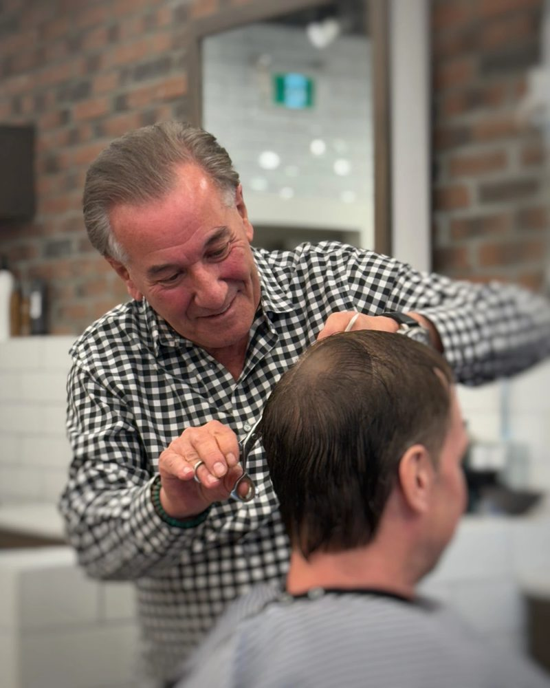

Master barber · Harry and Sons, Walnut Grove
PAUL DA COSTA
Years of experience behind the chair. High quality cuts, excellent service, and a cup of coffee when you arrive.
BOOK NOWOn the booking page, choose Paul under Staff.

Master barber · Harry and Sons, Walnut Grove
Years of experience behind the chair. High quality cuts, excellent service, and a cup of coffee when you arrive.
BOOK NOWOn the booking page, choose Paul under Staff.
